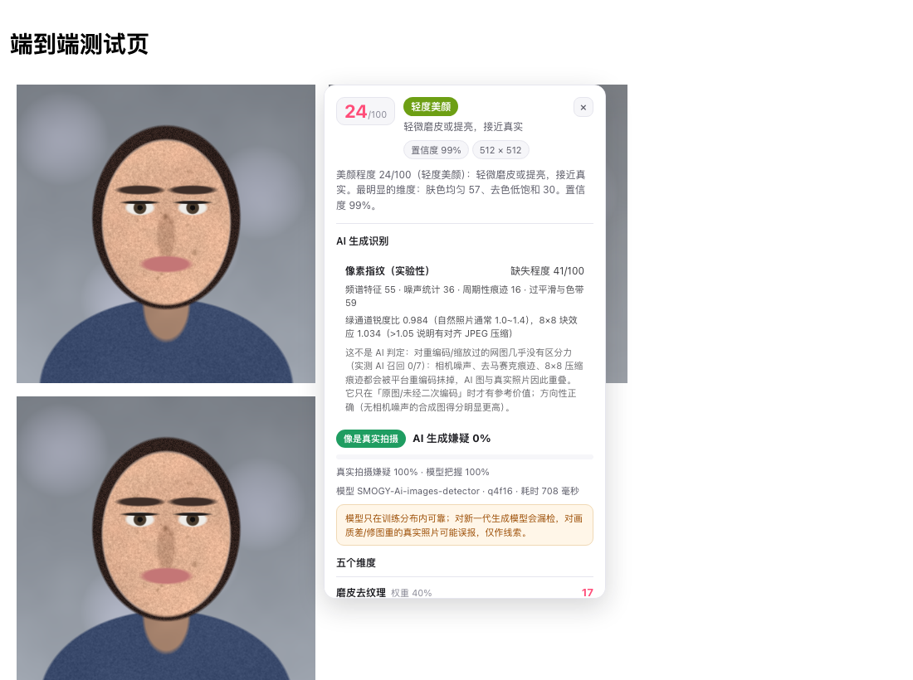
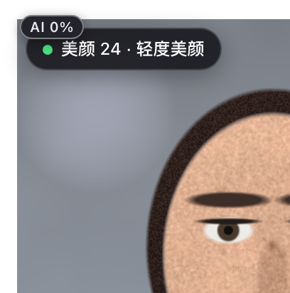
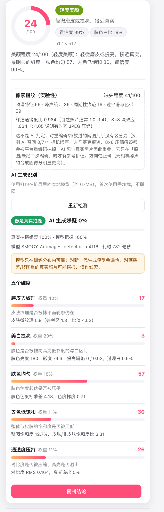
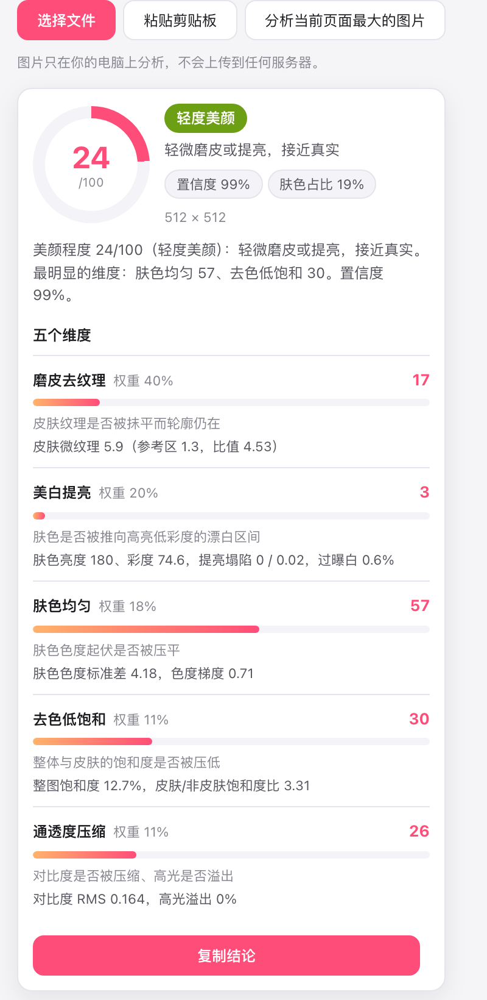
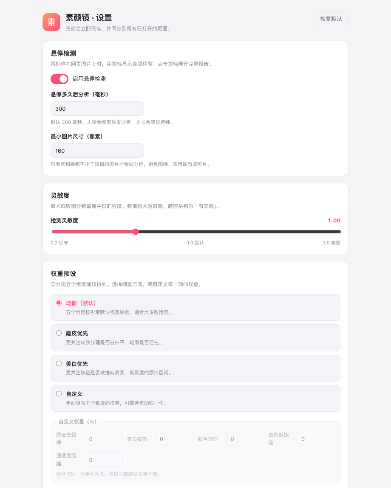

素颜镜 · 美颜程度检测：悬停网页图片，就知道被美颜了几成
这是一个 Chrome MV3 扩展。它把图片还原成像素， 在本地量三件事：皮肤纹理被抹平了多少、肤色被漂白了多少、 色度与对比被压了多少，然后给出 0~100 的「美颜程度」 和五个维度的分项依据。v1.1 起还能按需判断这张图 是否像 AI 生成（打包在扩展里的本地小模型）。判定全程在你的浏览器里完成 —— 不联网、不上传图片、不调用云端模型。
下载完整版 v1.3.0（zip，50,053,804 字节（47.7 MiB），含 AI 识别模型） 轻量版 v1.0.0（zip，74.2 KiB，仅美颜） AI 识别怎么用

它和 XrayTun 是什么关系：同一个作者的两个独立项目
本页介绍的是 素颜镜 · 美颜程度检测，它与 XrayTun 是同一个作者的另一个独立项目：XrayTun 是 macOS 上的 Xray 图形客户端， 本项目是一个浏览器扩展，两者不集成、不共享代码、不互相依赖， 也不能用本项目去配置或管理 Xray。放在同一个站点上，是因为它们出自同一作者， 而不是因为它们属于同一个产品。
四种用法
最常用的是点一下就能给整个 X / 小红书 / 微博页面上所有图片定档； 本地图片走同一套引擎，结果完全一致。
| 用法 | 操作 | 结果 |
|---|---|---|
| 悬停速览 | 鼠标停在网页任意图片上约 0.3 秒 | 图片角上出现角标：美颜 42 · 中度美颜 |
| 查看详情 | 点击角标 | 页面右下角展开完整报告卡片（可复制结论） |
| 右键菜单 | 在图片上右键 →「检测这张图的美颜程度」 | 直接展开报告卡片 |
| 本地图片 | 点扩展图标：拖拽图片 / 选择文件 / Ctrl+V 粘贴 / 分析当前页最大图片 |
弹窗内给出同一套评分 |
悬停检测只处理宽高都不小于设定阈值（默认 160px）的
<img>，跳过图标与表情；同一张图的结果会缓存，重复悬停不会重复计算；
可以按站点关掉悬停，也可以整体关掉（见安装里的设置项）。
分数怎么读：一个总分 + 五个维度
「美颜程度」不是一个魔法数字。美颜 App 的处理链基本是 磨皮 → 美白 → 调色 → 补锐化，所以检测也按这四件事拆成五个维度， 每个维度都能单独看到原始依据（皮肤微纹理是多少、肤色亮度和彩度是多少、色度标准差是多少）。
| 总分 | 档位 | 含义 |
|---|---|---|
| 0–19 | 原生 | 几乎看不到美颜痕迹 |
| 20–39 | 轻度美颜 | 轻微磨皮或提亮 |
| 40–59 | 中度美颜 | 明显的磨皮 + 美白 |
| 60–79 | 重度美颜 | 皮肤纹理大量丢失、肤色明显漂白 |
| 80–100 | 极致美颜 | 接近「塑料脸」级别的强处理 |
| 维度 | 默认权重 | 它看什么 |
|---|---|---|
| 磨皮去纹理 | 40% | 皮肤的高频微纹理是否被抹平（真实原片在 512px 下约 5~8，重磨皮会掉到 1~2） |
| 美白提亮 | 20% | 肤色是否「又亮又没有彩度」，以及高亮低彩度像素的占比（漂白妆效） |
| 肤色均匀 | 18% | 皮肤色度（Cr/Cb）的起伏是否被压平 —— 腮红、血色、光影差都被磨掉 |
| 去色低饱和 | 11% | 整图与皮肤的饱和度是否被压低 |
| 通透度压缩 | 11% | 对比度是否被压缩、高光是否溢出 |
报告里还有两个必须如实看待的标记： 置信度（由肤色区域占比、图片尺寸、是否被迫放宽肤色规则共同决定， 低于 50% 会在界面上标出来），以及 「仅供参考」 —— 没检测到可信人脸肤色时，只给整图参考值，不冒充结论。
AI 生成识别：本地模型，按需触发
最直接的方式是悬停：鼠标停在图片上，美颜角标出现的同时，
角标左上角会直接给出 AI 结果 —— 红=疑似 AI 生成、
绿=像是真实拍摄、灰=无法判断。第一次会先加载本地模型（约 1~3 秒，
标识显示 AI …），之后每张新图约 0.8 秒；同一张图走缓存，不会重复推理。
想省资源可以在设置页关掉「悬停时自动检测 AI」，标识就会停在可点的 AI?，点一下才推理。

角标左上角在模型判定之前，还会先出现一个虚线标识 像素 42 ——
那是像素指纹算法的结果：纯像素、无模型、约 30 毫秒，随悬停立刻出来。
它量的是「这张图缺少自然相机指纹的程度」：频谱（FFT 径向功率谱的斜率 / 高频占比 / 孤立谱峰）、
周期性（上采样与棋盘格在自相关上的固定峰）、传感器噪声（原生分辨率下的平坦区噪声、
随亮度增长、通道相关），以及相机管线痕迹（绿通道锐度比、JPEG 8×8 块效应）。
它不是 AI 判定，我们也不会拿它当判定：实测 12 张真实照片 + 6 张 AI 生成图上， 这些特征在两类之间完全重叠，阈值化后 AI 召回 0/7 —— 相机噪声、去马赛克与压缩痕迹 都会被平台重编码抹掉，真实照片因此同样「没有像素特征」。方向性是对的（完全没有相机噪声的程序化 合成图得分最高），但不足以给出可用阈值。所以规则很简单：虚线 = 证据，实心彩色 = 模型判定。
除了「美颜程度」，完整版还能判断一张图是否像 AI 生成。 它与美颜检测是两个独立维度：美颜检测是纯像素统计、悬停即出； AI 识别需要模型，因此只在你点按钮时才触发（悬停不会偷偷加载模型）。 模型（52.5MB 的 Swin 分类器）与推理运行时都打包在扩展里， 在 MV3 的 offscreen 文档里用 WebAssembly 跑，没有任何网络请求。
| 项 | 说明 |
|---|---|
| 模型 | SMOGY-Ai-images-detector（Swin，224×224）的 ONNX 量化导出，52.5MB，随扩展打包； 许可证 CC BY-NC 4.0（非商业），出处与改动说明随包提供 |
| 运行时 | onnxruntime-web（MIT）的 WASM 后端，单线程，不依赖跨源隔离；模型跑在 offscreen 文档，不占页面主线程 |
| 输出 | 「AI 生成嫌疑」百分比 + 三档判定：疑似 AI 生成 / 像是真实拍摄 / 无法判断， 并显示模型名与本次耗时 |
| 实测 | 真实照片 14/15 判对、AI 生成图（Stable Diffusion / Midjourney）5/6 判对； 合成人像（含极端美颜）3/3 判为真实拍摄 —— 说明美颜不会污染这个维度 |
| 耗时（真机） | 首次使用加载模型约 1.0 秒，之后单张推理约 0.75~0.8 秒 |

必须一起说清楚的局限：模型只在训练分布内可靠，对更新的生成模型会漏检； 对画质差、压缩重、重美颜的真实照片可能误报（实测 15 张真实/合成图里有 1 张食物照被判成 AI）。 所以界面只给三档判定，不给「这就是 AI」的确定性结论，并在结果下方固定显示这句话。
文字的 AI 生成识别（中文 / 英文）本版没有集成：实测 4 个开放模型 （126MB / 67MB / 103MB / 409MB，含中文专用模型）在 HC3 评测集上准确率只有 50%~60%， 或出现「把人类答案全判成 ChatGPT」这类单向错误。把一个抛硬币的检测器装进扩展，比不装更糟。
检测原理：先归一尺度，再只看皮肤
这套判定没有模型，全部是像素统计。能站得住的关键只有两步：
- 尺度归一：不同尺寸的图片，纹理能量本来就没有可比性。 所以先把图片（只缩不放）归一到长边 512px 的工作分辨率， 所有指标都在这个尺度上测量。这是整套阈值能成立的前提。
- 肤色掩膜 + 形状把关：用 YCbCr 严格规则并上放宽规则 （专收被漂白的高亮低彩度皮肤，且必须「偏暖」，否则黑白照会被误认成皮肤）。 仅有颜色还不够 —— 实测食物照会有 30% 的像素命中肤色规则， 于是再加一层形状要求：最大肤色连通域占比 ≥4%、 长宽比 0.35~1.40、填充率 ≥0.30， 不满足就判定「没有可信人脸肤色」，皮肤类维度整体停用而不是硬给分数。
然后才是量：皮肤区域内 5×5 邻域的标准差（微纹理）、皮肤与画面其他细节区的纹理比、 肤色亮度与彩度、皮肤色度的标准差与梯度、整图饱和度、对比度 RMS 与高光溢出比例。 最后按权重加权，再用「灵敏度」对偏离中位的分数做放大或收缩。
阈值不是拍脑袋定的：拿 7 张真实未美颜人像（不同肤色、不同光线年代） 保证不误伤，再用自研的已知强度参考美颜管线（0 → 1.0 → 极端） 检验单调性与动态范围，外加风景 / 食物 / 暖白大理石建筑 / 黑白照四类反例。 推导过程、实测数据、以及一路上修掉与放弃的东西，都写在项目文档里（见链接）。
安装与设置
-
选一个下载并解压（都会得到一个
beauty-meter-extension/目录）： 完整版 v1.3.0（50,053,804 字节（47.7 MiB），含 AI 生成识别，托管在 GitHub Releases —— 官网单文件上限 25 MiB）或 轻量版 v1.0.0（74.2 KiB，只有美颜检测，没有任何模型文件）。 - Chrome 地址栏输入
chrome://extensions/，打开右上角开发者模式。 - 点「加载已解压的扩展程序」，选中解压出来的那个目录（里面直接就是
manifest.json）。 - 建议点扩展图标旁的图钉固定到工具栏；打开任意网页，把鼠标停在人像上即可。
设置页可以改这些（保存在 chrome.storage.sync，改完即时生效）：
| 设置项 | 默认 | 说明 |
|---|---|---|
| 启用悬停检测 | 开 | 关掉后不再出现角标，仍可用右键菜单与弹窗 |
| 启用 AI 生成识别 | 开（仅完整版） | 关掉后报告里不再出现「检测是否 AI 生成」按钮，模型也不会被加载 |
| 悬停多久后分析 | 300 毫秒 | 太短会频繁触发计算，太长会觉得迟钝 |
| 最小图片尺寸 | 160 像素 | 宽高都达标才分析，避免图标与表情被当成照片 |
| 检测灵敏度 | 1.00 | 放大或收缩分数偏离中位的程度：越大越容易判成「有美颜」 |
| 权重预设 | 均衡 | 也可以选「磨皮优先」「美白优先」，或手动填五个维度权重（引擎会自动归一化） |
| 站点白名单 | 空 | 列在里面的站点完全不注入 |
验证状态
不是「写完就算」，每一项都是跑出来的：
| 验证 | 结果 |
|---|---|
| 单元测试 + 静态完整性检查 | 37 / 37 通过（美颜：单调性、档位边界、降级路径、确定性、性能、报告契约；AI：预处理张量、softmax、三档阈值、结果字段、模型与清单完整性） |
| 真实 Chrome 端到端 |
24 / 24 通过：用 CDP 加载未打包扩展，验证后台跨域取图
（fetch → createImageBitmap → OffscreenCanvas → 引擎）、
悬停角标、报告卡片、设置项生效、弹窗与 Service Worker 里的引擎契约
|
| 同一张图的判别力（真机实测） | 合成人像的原片 24 分（轻度） vs 美颜版 66 分（重度） |
| 真实原片不误伤 | 7 张未美颜人像全部落在 12~27 分（原生 / 轻度），没有一张达到「中度美颜」 |
| 已知强度参考美颜 | 强度 0 → 1.0 → 极端全部单调递增；中等强度 32~57 分，强处理 46~76 分 |
| 反例 | 风景 / 食物 / 暖白大理石建筑 → 皮肤类维度停用并标「仅供参考」；黑白照 → 直接拒绝判断 |
| AI 识别（真机，offscreen 推理） |
真实人像 aiProb=0、Stable Diffusion 3.5 生成图 aiProb=1；
模型首次加载 1.0 秒、单张推理 0.75~0.8 秒；报告卡片与弹窗里点按钮到出结果全链路验证
|


隐私与权限
全部判断都在本地完成：扩展不发起任何分析用的网络请求，
没有统计、上报、埋点，也不加载任何远程代码。完整版把 AI 模型与推理运行时
打包在扩展里（模型 52.5MB + wasm 14MB），推理在本地 offscreen 文档里用
WebAssembly 完成 —— 为了跑 wasm，扩展页面的 CSP 需要 'wasm-unsafe-eval'，
它只允许 WebAssembly，不会放开 eval 或远程脚本。
| 权限 | 为什么需要 |
|---|---|
storage |
保存你的设置（悬停开关、灵敏度、权重、白名单） |
contextMenus |
右键菜单入口 |
offscreen |
跑本地 AI 模型的 offscreen 文档（MV3 官方机制）：模型推理不能放在随时会被回收的 Service Worker 里，也不该占页面的主线程 |
<all_urls>（host 权限） |
为了读取你要检测的那张图的像素。跨域图片在网页里取像素会被 canvas 污染，
所以扩展在后台用 fetch 取字节 → createImageBitmap →
OffscreenCanvas 分析。图片字节不离开本机，
也不会被写入任何地方。
|
已知边界（用它之前该知道的）
- 没有可信人脸肤色时无法判断：风景、食物、纯色、黑白照， 以及暖白大理石、沙滩、木地板这类「高亮 + 偏暖 + 低彩度」的表面， 会被形状把关判为「没有可信人脸肤色」，只给整图参考值或直接拒判。
- 人脸占比小于 4% 的全身远景也会被拒判 —— 这是上一条的代价，宁可拒绝也不乱判。
- 侧脸、强逆光、浓妆/舞台妆会降低肤色掩膜质量，置信度随之下降。
-
极深肤色（例如 RGB 约
[80,54,42]）可能因肤色像素太少而走「仅供参考」， 或分数偏保守。 - 天生极白皙/粉白的肤色会拿到中等「美白」分：美白本质是相对量， 没有原图就没有「变白前」的参照，只能检测「高亮 + 低彩度」这种漂白妆效。
- 大眼、瘦脸等几何形变不在检测范围内：那需要人脸关键点模型， 本扩展不联网、不带模型。
- 分数是「疑似程度」，不是鉴定结论：换压缩率、换尺寸会有小幅波动；平台二次压缩会让纹理损失叠加，分数可能偏高。
- AI 生成识别只在训练分布内可靠：对更新的生成模型会漏检，对画质差、压缩重、 重美颜的真实照片可能误报（实测 15 张真实/合成图里 1 张食物照被判成 AI）；只给三档判定，不给确定性结论。
- 文字的 AI 识别本版未集成：实测 4 个开放模型在 HC3 上准确率仅 50%~60%，原因见上面第四节。
常见问题
它到底在测什么？
测的是「这张图看起来经过了多少美颜处理」，而不是「这个人好不好看」。 具体量五件事：皮肤微纹理被抹平的程度、肤色是否被推向高亮低彩度、 肤色色度起伏被压平的程度、饱和度与对比度被压低/高光溢出的程度。
分数准吗？
对「有没有重度美颜」这件事，实测判得住：7 张真实未美颜人像全部 12~27 分， 而对同一批原片施加已知强度的参考美颜后，分数随强度单调上升， 强处理能到 46~76 分。但它给的是概率性的疑似程度：换压缩率、换尺寸会有小幅波动， 天生极白皙的肤色会天然带一点「美白」读数。请把它当线索，不要当鉴定结论。
会上传我的照片吗？
不会。扩展没有任何分析用的网络请求，没有统计与上报，也不加载远程代码； 像素在你自己的浏览器里算完即弃。唯一需要联网的场景是你自己去点下载 zip。
为什么有的图显示「仅供参考」，有的直接说无法判断？
因为「没有可信人脸肤色」时，任何分数都是编的。黑白/近灰度图没有色彩信息， 直接拒绝判断并说明原因；风景、食物、纯色等画面没有可信肤色区域， 就只用整图的饱和度/对比度给一个参考值，并把置信度封顶、在界面上标出来。
支持哪些浏览器？怎么安装？
需要 Chrome 109+ 或同代内核的 Chromium 浏览器（Manifest V3）。
安装是「解压即用」：下载 zip → 解压 → chrome://extensions →
打开开发者模式 → 加载已解压的扩展程序 → 选中解压出来的目录。
为什么没有上架 Chrome 应用商店？
上架需要开发者账号与审核流程，而这个项目目前只在本站以 zip 分发。
好处是你能直接看到全部源码（包内就是未压缩的 src/），
不放心的话可以逐行读完再装。
AI 生成识别的准确率有多高？
自测规模不大：8 张真实照片里 14/15 判对（唯一误报是一张食物照）、6 张 AI 生成图里 5/6 判对、 3 张合成人像（含极端美颜）全部判为真实拍摄。它不是鉴定工具：对更新的生成模型会漏检， 对压缩重或重修图的真实照片可能误报，所以界面只给「疑似 / 像是 / 无法判断」三档。
AI 识别会把我的图片传到网上吗？
不会。模型（52.5MB）与推理运行时（WebAssembly）都打包在扩展里，推理在你的浏览器内完成， 全程没有网络请求。唯一需要联网的场景是你自己下载安装包。
为什么完整版要 50MB？轻量版少什么？
完整版内置了一个 52.5MB 的 AI 图像分类模型（压缩后约 50MB），这是「离线识别 AI 生成」的代价； 轻量版 74.2 KiB 只有纯像素的美颜检测，不包含任何模型文件，安装更快、占用更小。
它能看出大眼、瘦脸这类形变吗？
不能。几何形变需要人脸关键点模型，本扩展不联网、不带模型， 只做像素级统计，因此形变不在检测范围内。反过来，它对「磨皮 + 美白 + 压色」 这条美颜主链路更敏感。
链接
- 下载完整版 v1.3.0（zip，50,053,804 字节（47.7 MiB），含 AI 识别模型与未压缩源码）
- 下载轻量版 v1.0.0（zip，74.2 KiB，仅美颜检测）
- English page（与中文页逐段等价）
- XrayTun 主站（同一作者的另一个项目：macOS 上的 Xray 图形客户端）
本项目目前没有独立的代码仓库，源码随 zip 一起分发；
校验提示：解压后 manifest.json 里的 version 应为
1.3.0（完整版）或 1.0.0（轻量版）；
完整版目录里还应包含 src/models/ai-image/model_q4f16.onnx 与
src/models/ai-image/ATTRIBUTION.md（模型的来源与许可证）。